a workbook for two people deciding, with open eyes, whether to try again
You two are doing something that takes real courage: looking honestly at a relationship that ended and asking whether it deserves another chapter. This workbook won't answer that for you — but it will help you have the conversations that will.
There are three sessions plus a recurring weekly check-in. Do one session at a time, ideally a week apart. Sit side by side, phones away, no time pressure. Each of you types your own answer before reading the other's.
Your names written in the sand, the love lock, the matching LA caps, the Oregon coast, the birthday sparkler, holding hands on a road trip — you two have a real record of being happy together. Keep it visible. When the sessions get hard (they will), scroll back here and remember what the work is for.
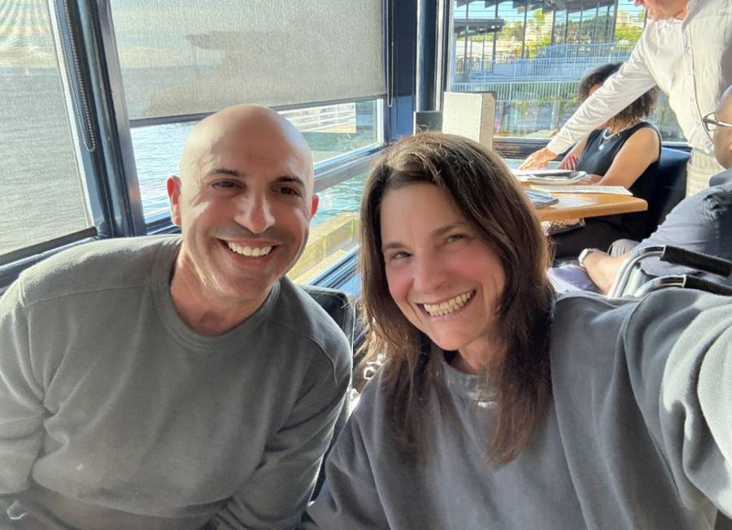
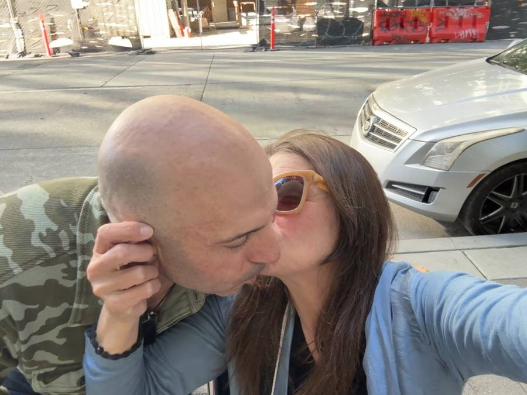
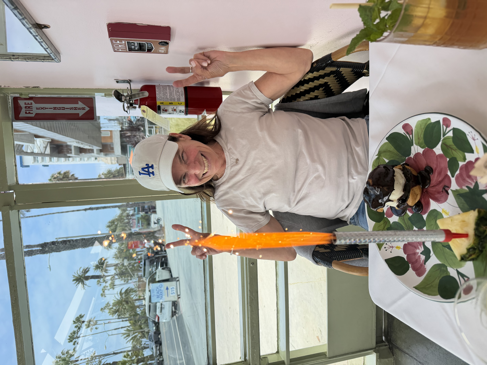
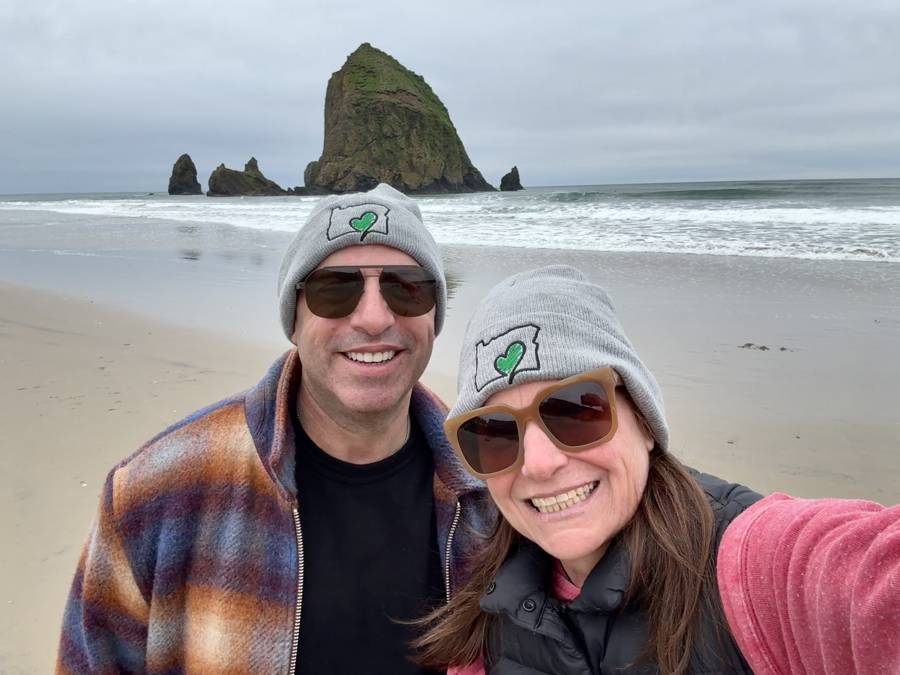
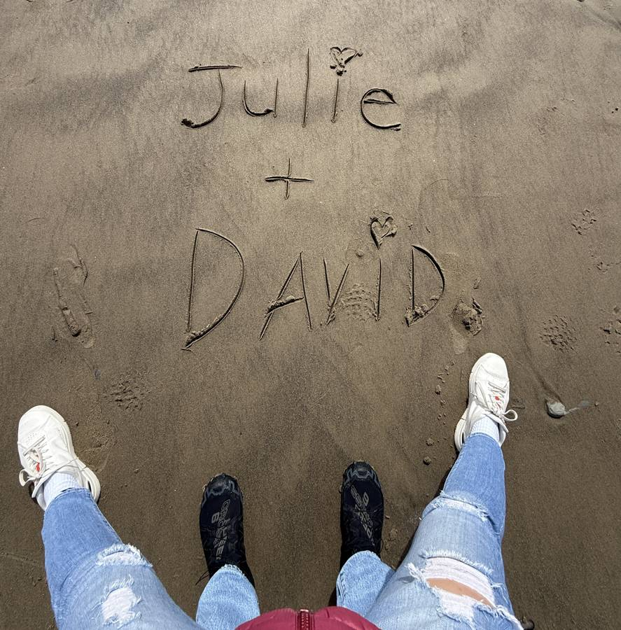
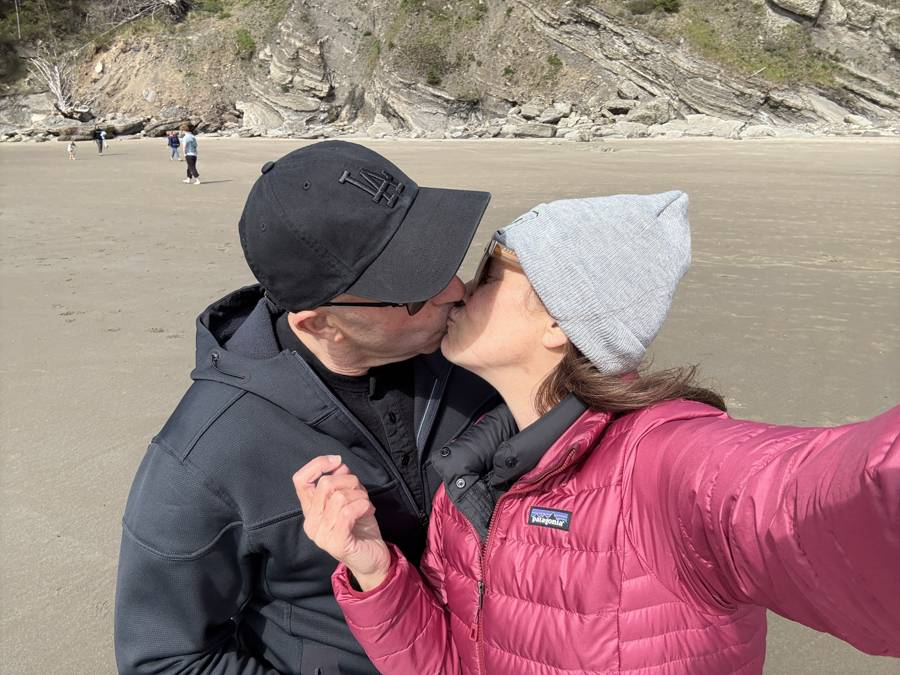
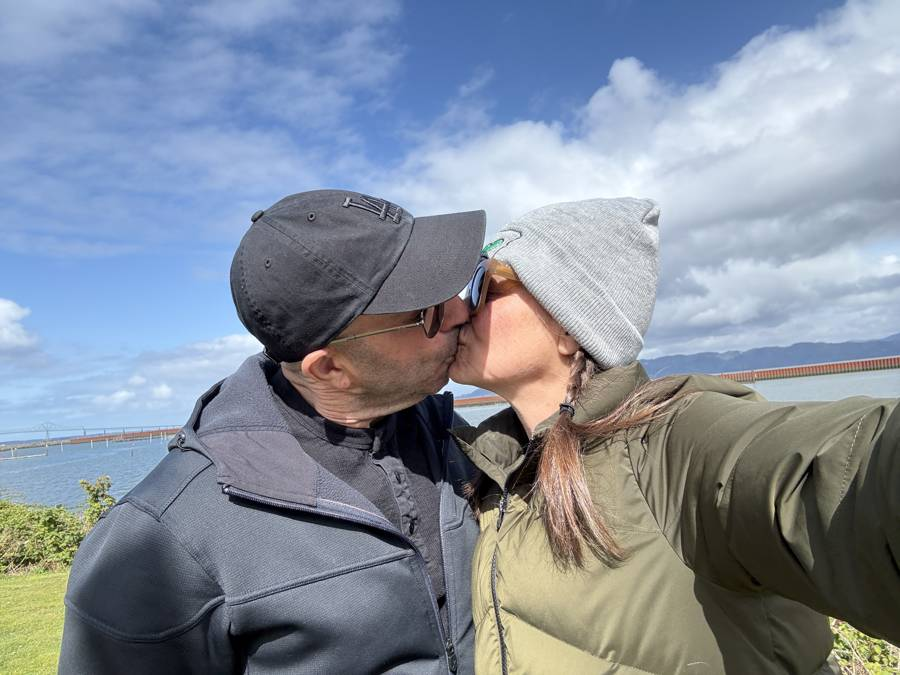
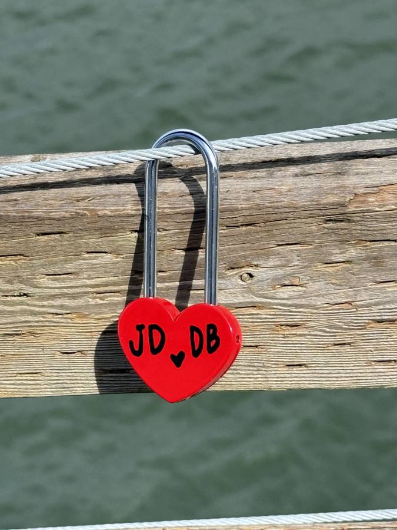
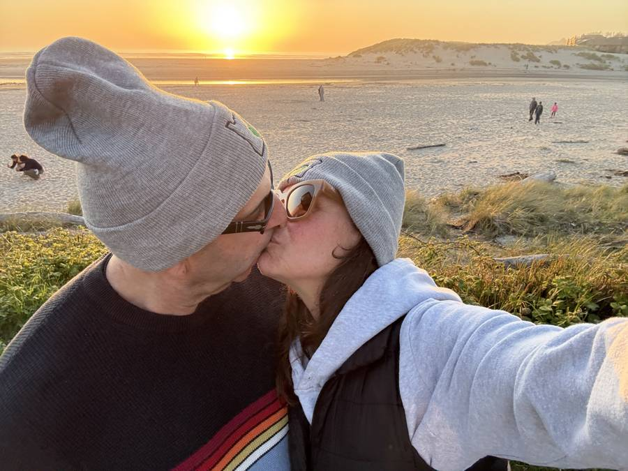
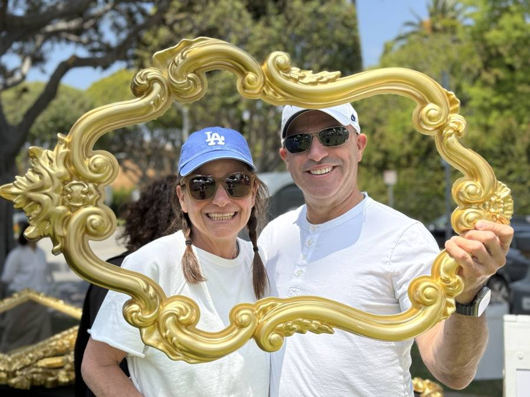
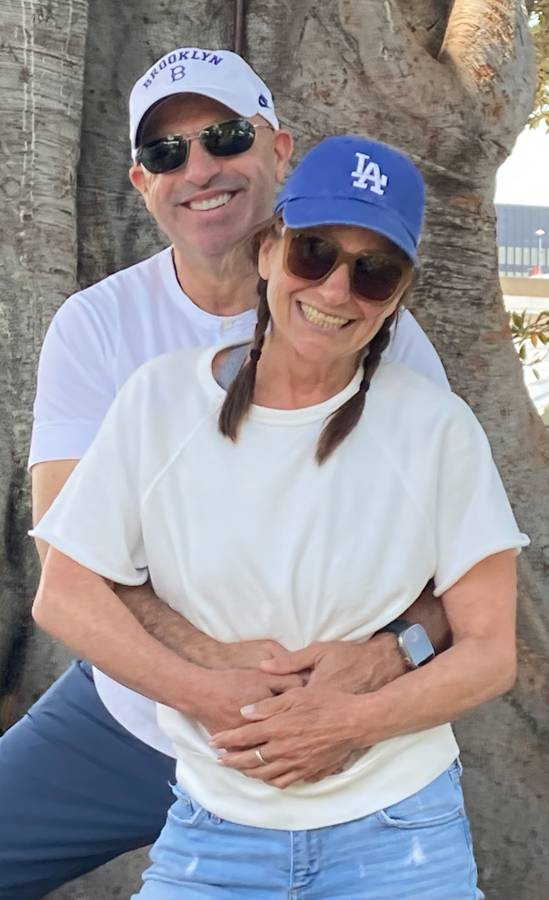
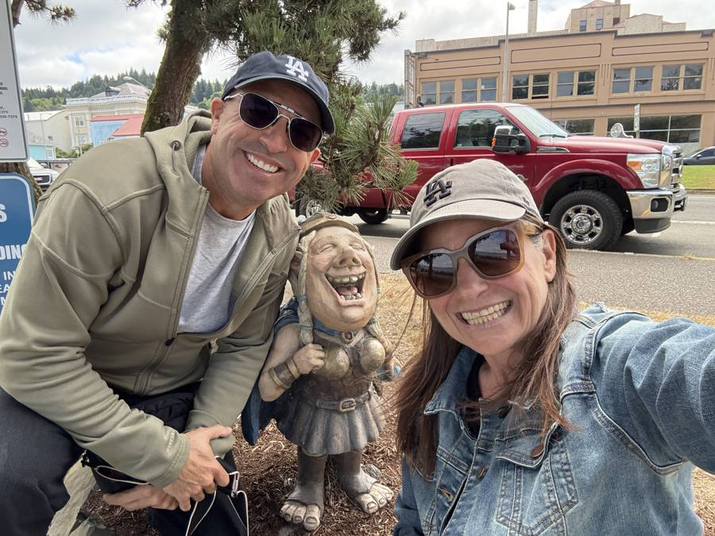
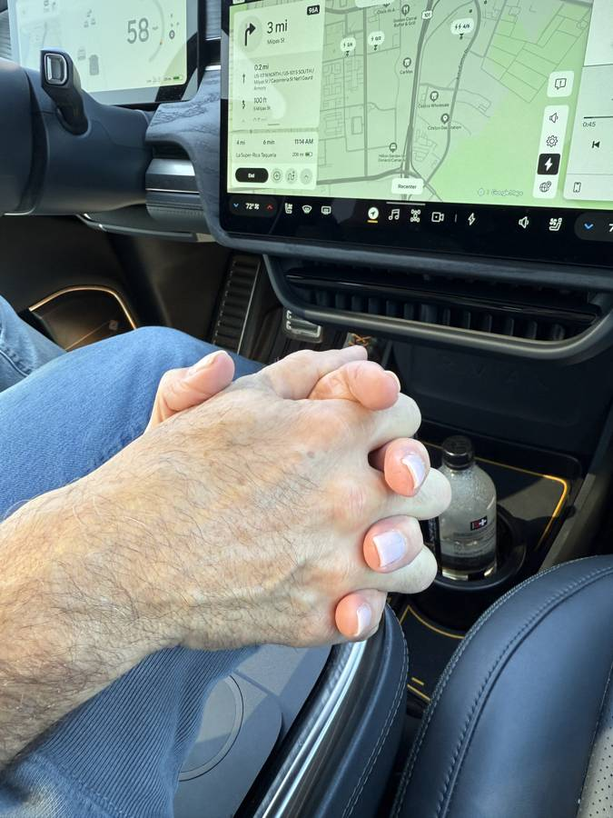
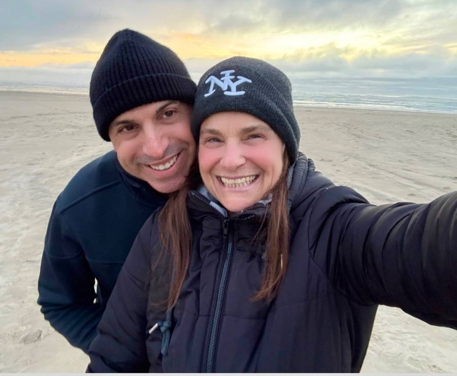
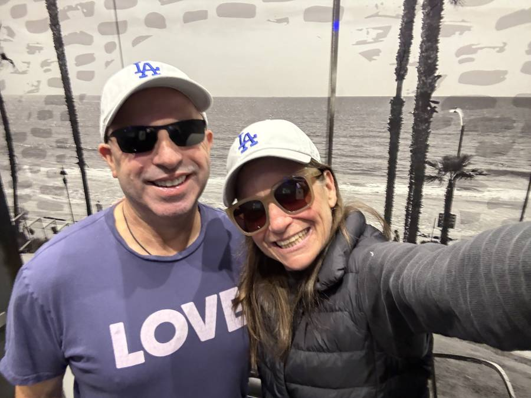
Photos are stored only in this browser, next to your answers.
In one or two sentences: why do you want to explore getting back together? (Not "why did we break up" — that comes later. Why are you here, now?)
What's one thing you're afraid of in doing this?
Read each other's answers. Don't discuss yet — just say "thank you for telling me." That's the whole warm-up.
Trust isn't rebuilt by promising harder. It's rebuilt by naming exactly what broke, taking ownership without excuses, and then behaving differently in small, boring, repeated ways. This session is about the naming and the owning.
Each of you answers privately first. Use "I" statements: "I felt ___ when ___" rather than "You always ___."
What hurt you most in our relationship? Be specific — one or two moments or patterns, not a general grievance.
What do you think you did that hurt your partner most? (Answer before reading theirs. The gap between your two answers is important information.)
Complete this, out loud and then in writing: "I'm sorry that I ___. It was not okay because ___. What I want to do differently is ___." No "but," no "because you," no explanation of your intentions.
What specific, observable behavior would help you trust your partner again? ("Communicate better" is too vague. "Text me if plans change" is observable.)
And honestly: is there anything you're not sure you can forgive or change? It's better to name it now.
Most couples don't break up over what they fought about — they break up over how they fought, or how they stopped talking at all. This session maps your patterns and gives you two concrete tools.
Researchers who study couples find the biggest predictors of breakdown are criticism ("you always"), contempt (eye-rolling, mockery), defensiveness ("that's not what I did"), and stonewalling (shutting down, going silent). Almost every couple does some of these under stress.
When we argued, what was your go-to move — criticize, get defensive, go cold, get sarcastic, leave, something else? (Describe your own behavior, not your partner's.)
Describe one recurring argument we kept having. What do you think it was actually about, underneath?
Practice this now with a low-stakes topic (something that bothers you a little, not your biggest wound):
After trying it: what was hard about being the listener?
A "repair attempt" is anything that de-escalates a fight — a touch, a joke, "can we start over?", "I'm on your team." Couples that last aren't the ones who never fight; they're the ones whose repair attempts get accepted.
What could your partner say or do mid-argument that would actually reach you? And what's a repair attempt of yours that they may have missed before?
Agree on one shared "pause signal" — a word or gesture either of you can use when a conversation is going off the rails, meaning "20-minute break, then we come back." Write it here:
Love wasn't your problem — most couples who break up still love each other. The question is fit: can you each give what the other needs, without abandoning yourselves to do it? This session is where you find out.
What are your top three needs in a relationship? (Examples: affection, independence, reliability, adventure, feeling prioritized, physical intimacy, calm, ambition.) Which of these went unmet before?
What does your partner need that is genuinely hard for you to give? Be honest — this question only works if you are.
Getting back together only works if something has changed — in you, in them, or in circumstances. What is concretely different now compared to when we broke up? (If the honest answer is "nothing yet," say so.)
Picture us a year from now, together and doing well. What does an ordinary Tuesday look like? (Where do we live, how do we spend evenings, how do we handle stress?)
If you both want to keep going, don't just drift back together. Write a short trial agreement, together, in one box:
Same time each week, ideally somewhere pleasant. Four questions each, then done. Download your notes afterward if you want a running record — this page holds one week at a time.
1. One thing you did this week that I appreciated:
2. One moment I felt distant from you, and what was going on for me:
3. How are we doing on our commitments from the agreement? (Honest score, 1–10, and why.)
4. One thing I need more of (or less of) next week:
Close every check-in the same way: each of you names one thing you're looking forward to together next week.